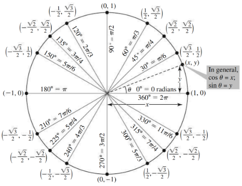

Pythagorean:
\(\displaystyle \sin^2 \theta + \cos^2 \theta = 1 \quad \quad \quad \tan^2 \theta + 1 = \sec^2 \theta\)
\(\displaystyle 1 + \cot^2 \theta = \csc^2 \theta\)
Even/Odd: \(\displaystyle \sin(-\theta) = -\sin \theta \quad \quad \quad \quad \cos(-\theta) = \cos \theta\)
Sum/Diff: \(\displaystyle \sin(A \pm B) = \sin A \cos B \pm \cos A \sin B\)
\(\displaystyle \cos(A \pm B) = \cos A \cos B \mp \sin A \sin B\)
Double-Angle: \(\displaystyle \sin(2\theta) = 2\sin \theta \cos \theta\)
\(\displaystyle \cos(2\theta) = \cos^2 \theta - \sin^2 \theta = 2\cos^2 \theta - 1=1-2\sin^2 \theta\)
Half-Angle: \(\displaystyle \sin\left(\frac{\theta}{2}\right) = \pm\sqrt{\frac{1 - \cos \theta}{2}}\)
\(\displaystyle \cos\left(\frac{\theta}{2}\right) = \pm\sqrt{\frac{1 + \cos \theta}{2}}\)
Law of Sines & Cosines:
\(\displaystyle \frac{\sin A}{a} = \frac{\sin B}{b} = \frac{\sin C}{c}\) \(\displaystyle c^2 = a^2 + b^2 - 2ab \cos C\)
General:
\(\displaystyle \frac{d}{dx}[c] = 0\) \(\displaystyle \frac{d}{dx}[x^n] = n x^{n-1}\)
\(\displaystyle (cf)' = cf'\) \(\displaystyle (f \pm g)' = f' \pm g'\)
\(\displaystyle (fg)' = f'g + fg'\) \(\displaystyle \left(\frac{f}{g}\right)' = \frac{f'g - fg'}{g^2}\)
\(\displaystyle \frac{d}{dx}[f(g(x))] = f'(g(x))g'(x)\)
Exp & Log:
\(\displaystyle \frac{d}{dx}[e^x] = e^x\) \(\displaystyle \frac{d}{dx}[b^x] = b^x \ln b\)
\(\displaystyle \frac{d}{dx}[\ln x] = \frac{1}{x}\) \(\displaystyle \frac{d}{dx}[\log_b x] = \frac{1}{x \ln b}\)
Trig:
\(\displaystyle \frac{d}{dx}[\sin x] = \cos x\) \(\displaystyle \frac{d}{dx}[\cos x] = -\sin x\)
\(\displaystyle \frac{d}{dx}[\tan x] = \sec^2 x\) \(\displaystyle \frac{d}{dx}[\cot x] = -\csc^2 x\)
\(\displaystyle \frac{d}{dx}[\sec x] = \sec x \tan x\) \(\displaystyle \frac{d}{dx}[\csc x] = -\csc x \cot x\)
Inv Trig: \(\displaystyle \frac{d}{dx}[\arcsin x] = \frac{1}{\sqrt{1 - x^2}}\)
\(\displaystyle \frac{d}{dx}[\arccos x] = -\frac{1}{\sqrt{1 - x^2}}\)
\(\displaystyle \frac{d}{dx}[\arctan x] = \frac{1}{1 + x^2}\)
\(\displaystyle \frac{d}{dx}[\operatorname{arccot} x] = -\frac{1}{1 + x^2}\)
\(\displaystyle \frac{d}{dx}[\operatorname{arcsec} x] = \frac{1}{|x|\sqrt{x^2 - 1}}\)
\(\displaystyle \frac{d}{dx}[\operatorname{arccsc} x] = -\frac{1}{|x|\sqrt{x^2 - 1}}\)
General: \(\displaystyle \int x^n \, dx = \frac{x^{n+1}}{n+1} + C \quad (n\neq -1)\)
\(\displaystyle \int \frac{1}{x} \, dx = \ln|x| + C\) \(\displaystyle \int c f(x) \, dx = c \int f(x) \, dx\)
Exp:
\(\displaystyle \int e^x \, dx = e^x + C\) \(\displaystyle \int b^x \, dx = \frac{b^x}{\ln b} + C\)
Trig:
\(\displaystyle \int \sin x \, dx = -\cos x + C\)
\(\displaystyle \int \cos x \, dx = \sin x + C\)
\(\displaystyle \int \sec^2 x \, dx = \tan x + C\)
\(\displaystyle \int \csc^2 x \, dx = -\cot x + C\)
\(\displaystyle \int \sec x \tan x \, dx = \sec x + C\)
\(\displaystyle \int \csc x \cot x \, dx = -\csc x + C\)
\(\displaystyle \int \tan x \, dx = \ln|\sec x| + C\)
\(\displaystyle \int \cot x \, dx = \ln|\sin x| + C\)
\(\displaystyle \int \sec x \, dx = \ln|\sec x + \tan x| + C\)
\(\displaystyle \int \csc x \, dx = -\ln|\csc x + \cot x| + C\)
Inv Trig: \(\displaystyle \int \frac{1}{\sqrt{a^2 - x^2}} \, dx = \arcsin\left(\frac{x}{a}\right) + C\)
\(\displaystyle \int \frac{1}{a^2 + x^2} \, dx = \frac{1}{a}\arctan\left(\frac{x}{a}\right) + C\)
\(\displaystyle \int \frac{1}{x\sqrt{x^2 - a^2}} \, dx = \frac{1}{a}\operatorname{arcsec}\left(\frac{|x|}{a}\right) + C\)